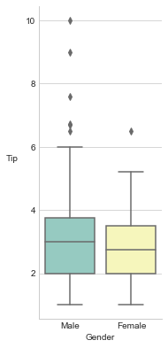
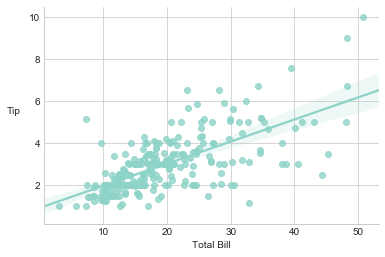

Bivariate Analysis
March 5, 2018
Bivariate Analysis
In general, there are three types of quantitative analysis.
- univariate (one variable)
- bivariate (two variables)
- multivariate (more than two variables)
This article will touch on bivariate analysis.
Exhaustively, there are three possible combinations for the variables. Each combination will be addressed in its specific section below.
- Both variables are categorical.
- One variable is numeric, the other categorical.
- Both variables are numeric.
Import Libraries
import matplotlib.pyplot as plt
import numpy as np
import pandas as pd
import seaborn as sns
%matplotlib inline
Set Seaborn Visualisation Options
sns.set_style('whitegrid')
sns.set_palette('pastel')
Load Dataset
We will be using the tips dataset, which contains information collected by a waiter about his tips as well as the characteristics of the diner.
tips = sns.load_dataset('tips')
tips.head()
| total_bill | tip | sex | smoker | day | time | size | |
|---|---|---|---|---|---|---|---|
| 0 | 16.99 | 1.01 | Female | No | Sun | Dinner | 2 |
| 1 | 10.34 | 1.66 | Male | No | Sun | Dinner | 3 |
| 2 | 21.01 | 3.50 | Male | No | Sun | Dinner | 3 |
| 3 | 23.68 | 3.31 | Male | No | Sun | Dinner | 2 |
| 4 | 24.59 | 3.61 | Female | No | Sun | Dinner | 4 |
Both Variables Are Categorical
This is best handled using a frequency table, post performing a groupby on both variables.
gb_sex_smoker = tips.groupby(['sex', 'smoker'])
gb_sex_smoker = gb_sex_smoker.size()
gb_sex_smoker = gb_sex_smoker.reset_index().rename(columns={0: 'count'})
gb_sex_smoker
| sex | smoker | count | |
|---|---|---|---|
| 0 | Male | Yes | 60 |
| 1 | Male | No | 97 |
| 2 | Female | Yes | 33 |
| 3 | Female | No | 54 |
One Variable is Numeric, the Other Categorical
For this combination, we want to understand the central tendency and dispersion of the numerical variable, split by the categorical variable.
fig, ax = plt.subplots(figsize=(2.5, 6.5))
sex_tip_box = sns.boxplot(x=tips['sex'], y=tips['tip'])
sex_tip_box.set(xlabel='Gender', ylabel='Tip')
sex_tip_box.set_ylabel(sex_tip_box.get_ylabel(), rotation=0, labelpad=15)
sns.despine()

Both Variables Are Numeric
If both values are numeric, we will be interested in how an increase or decrease in one variable affects the other. A scatterplot is the best way to demonstrate this graphically.
bill_tip_scatter = sns.regplot(x=tips['total_bill'], y=tips['tip'])
bill_tip_scatter.set(xlabel='Total Bill', ylabel='Tip')
bill_tip_scatter.set_ylabel(bill_tip_scatter.get_ylabel(), rotation=0, labelpad=15)
sns.despine()
